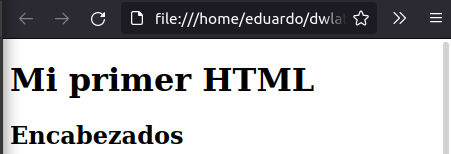

4. Tu primer "body" en HTML
El "body" es la parte visible de nuestra web.
<!DOCTYPE html>
<html lang="es">
<head>
</head>
<body>
</body>
</html>
Ésta, casi siempre, será la parte más extensa de nuestro documento html.
Dentro de sus tags escribirás todos los tags que organizarán
y estructurarán el contenido de la página.
En esta sesión estudiaremos sus elementos mas frencuentes.
1. Encabezados
Los encabezados definen el título y subtítulos de la información de tu página.
Para crear un encabezado escribimos texto entre cualquiera de los
siguientes tags
<h1></h1>
<h2></h2>
<h3></h3>
<h4></h4>
<h5></h5>
<h6></h6>
El número de los "headings" indica su nivel de importancia y son empleados
no solo por los usuarios sino también por los motores de búsqueda.
Los buscadores indexan las páginas empleando la estructura
que proveen los headings.
Un "h1" indica que el texto contenido es un
encabezado principal mientras que un "h2" señala que es un encabezado de
menor importancia que el anterior y así consecuentemente.
Los "headings" modifican el grosor del texto y su tamaño para comunicar
su importancia. Un "h4" será mucho más pequeño que un "h1".
Pero debes cuidar de no usar los "headings" sólo para formatear tu texto,
sino principalmente
para definir la estructura del documento o sección que presentas.
Emplear los encabezados solo para formatear tu contenido generará
una estructura confusa a nivel de código en tu página web.
A continuación te mostraré el código de un par de headings y luego su
presentación en el navegador web.
<body>
<h1>Mi primer HTML</h1>
<h1>Encabezados</h2>
</body>

Puedes modificar prácticamente todos los aspectos de estilo de los
encabezados en HTML. Separación entre letras, entre palabras, interlineados,
tamaño de fuente, peso, sombreado de texto, bordeado, y otros
más con CSS ubicado en el head del documento,
o con formateado local en HTML. Hablaremos sobre
esto en la quinta sesión.
2. Párrafos
Los párrafos representan bloques de texto con un formato
definido. Creamos párrafos escribiendo texto entre los
siguientes tags
<p></p>
Cada vez que comiences un nuevo tag de párrafo, el navegador lo diferenciará
del anterior empleando un formateado predeterminado o el que asignes luego.
A continuación te mostraré el código de algunos párrafos y luego su
representación en el navegador web.
<body>
<h1>Mi primer HTML</h1>
<h1>Párrafos</h2>
<p>Los párrafos representan bloques de texto
con un formato definido.</p>
<p>Cada vez que comiences un nuevo tag de párrafo,
el navegador lo diferenciará del anterior empleando
un formateado predeterminado o el que asignes luego.</p>
</body>

Como puedes notar en el ejemplo anterior, el formateado predeterminado
de los párrafos, genera un espacio vertical entre el primer y segundo
párrafo.
Puedes modificar por completo el formateado de los párrafos utilizando
CSS o con atributos de estilizado local dentro de los tags de párrafo.
3. Listas
Las listas organizan elementos relacionados dentro de una
pila (serie vertical de elementos)
que puede estar indexada visiblemente.
Hay tres tipos de listas en html:
- Listas ordenadas.
- Listas no ordenadas.
- Listas de descripción.
La lista que acabas de leer fue escrita dentro del código
de html para listas ordenadas.
Las listas ordenadas son aquellas indexadas con números naturales,
o letras, o números romanos.
<body>
<ol>
<li>Listas ordenadas.</li>
<li>Listas no ordenadas.</li>
<li>Listas de descripción.</li>
</ol>
</body>
Las listas no ordenadas son aquellas
indexadas con círculos, discos, asteríscos u otro símbolo.
<body>
<ul>
<li>Listas ordenadas.</li>
<li>Listas no ordenadas.</li>
<li>Listas de descripción.</li>
</ul>
</body>
Las listas de descripción automáticamente colocan el
término a definir hacia la izquiera del espacio disponible y en la próxima línea
ubican su definición.
Éste tipo de lista en HTML5 carece de símbolos precedentes al
término por definir y a su definición.
<body>
<dl>
<dt>Listas ordenadas.</dt>
<dd>Lista indexada con números o letras.</dd>
<dt>Listas de descripción.</dt>
<dd>Listas indexadas con círculos, discos, cuadrados o asteríscos.</dd>
<dt>Listas no ordenadas.</dt>
<dd>Listas indexadas sin símbolos precedentes al texto, pero que permiten seriar términos con sus respectivas definiciones
debajo de cada uno de ellos.</dd>
</dl>
</body>
A continuación te mostraré el código de cada tipo de lista y luego su representación en el
navegador.
<body>
<ol>
<li>Listas ordenadas.</li>
<li>Listas no ordenadas.</li>
<li>Listas de descripción.</li>
</ol>
<ul>
<li>Listas ordenadas.</li>
<li>Listas no ordenadas.</li>
<li>Listas de descripción.</li>
</ul>
<dl>
<dt>Listas ordenadas.</dt>
<dd>Lista indexada con números o letras.</dd>
<dt>Listas de descripción.</dt>
<dd>Listas indexadas con círculos, discos, cuadrados o asteríscos.</dd>
<dt>Listas no ordenadas.</dt>
<dd>Listas indexadas sin símbolos precedentes al texto, pero que permiten seriar términos con sus respectivas definiciones
debajo de cada uno de ellos.</dd>
</dl>
</body>
Puedes formatear cada aspecto de las listas con CSS o con formateado
local dentro del documento de html.
4. Comentarios
Los comentarios permiten te escribir texto dentro del documento
sin que éste se muestre en el navegador. Creamos comentarios en HTML
escribiendo dentro de éstos símbolos.
<!-- -->
Los comentarios te permiten escribir recordatorios de aspectos importantes
del documento o aclaratorias para otros desarrolladores
que trabajen con tu documento.
A continuación te mostraré el código de un par de comentarios y la manera
en la que ocultan el texto que contienen.
<body>
<h1>Mi primer HTML</h1>
<h1>Comentarios</h2>
<!--ÉSTE ES UN COMENTARIO, POR LO QUE
NO SE MOSTRARÁ EN LA
PÁGINA-->
<!--<p>Los comentarios te permiten
escribir texto dentro del documento
sin que éste se muestre en el
navegador. Nota que éste párrafo está contenido por tags de párrafo, pero aún
así no se mostrará por estar contenido a su vez dentro de los símbolos que
definen un comentario.</p>-->
<p>Éste párrafo en cambio, sí se mostrará, a diferencia de los anteriores que están escritos como comentarios.</p>
</body>

Los comentarios también te pueden ayudar a depurar tu código. Puedes identificar
errores imperceptibles a primera vista encerrando secciones de tu documento
dentro de un comentario para ubicar las partes de tu código que contienen
fallas.
5. Hipervínculos
Empleamos hipervínculos para desplazarnos entre las páginas de
un sitio web, para enviar correos, e incluso desplazarnos entre las secciones de una
página.
El código para escribir un hipervínculo es éste:
<a href=" ... "></a>
Puedes encerrar tanto texto como otros tags dentro del
tag "a". Esto te permite
utilizar texto, imágenes, formas e incluso botones como "links".
De igual manera, puedes escribir solo texto dentro del tag de "link".
Esto hará que se muestre el texto en el formato predeterminado para
los hipervínculos, o en el formato que definas luego.
A continuación te mostraré un texto contenido dentro de los tags para
hipervínculos.
Éste es un hipervínculo
Creamos un hipervínculo escibiendo su tag y asigando la dirección a la que
nos dirigiremos dentro del atributo "href".
<a href="dwlatino.github.io/html/#curso_html"></a>
Nota que la dirección fue escrita luego del asignador "=" y entre comillas ("").
Otro atributo esencial del link es "target". Al hacer click sobre un
link, éste se mostrará en la ventana actual de forma predeterminada.
<a href="index.html" target="_blank"></a>
El atributo
"target" admite cuatro alternativas para controlar la forma en la que
se mostrará el contenido de la dirección a la que nos refiere el link.
- _self
- Muestra el contenido en la ventana actual del navegador. Esta es
la opción predeterminada.
- _blank
- Muestra el contenido en otra pestaña dentro del navegador activo.
- _parent
- Muestra el contenido en la ventana activa del navegador.
- _top
- Ubica el inicio del documento referido en el tope de la página.
A continuación te mostraré el código para crear algunos links
y luego la manera en la que se muestran en el navegador.
<h1>Mi primer HTML</h1>
<h2>Hipervínculos</h2>
<a href="index.html" target="_blank">
Este texto será un link que me redigirá a la página "index.html", abriendo
una nueva pestaña debido a que especificamos el atributo target.
</a>
<hr>

Estudiaremos un poco más de los links en el próximo curso (Avanzando en
HTML), cuando
consideremos las sendas de archivos en HTML5.
6. Quiebres de línea
Los quiebres de línea te permiten separar texto o imágenes dentro de un
mismo tag en html.
El código para escribir un quiebre de línea es éste:
<br>
Puedes colocar este tag en cualquier parte de un párrafo, lista, o sección, y desplazará todo lo que esté a
su derecha o abajo, hacia una nueva línea.
A continuación te mostraré un uso de éste tag y
luego su visualización en el navegador.
<h1>Mi primer HTML</h1>
<h2>Quiebres de línea</h2>
<a href="index.html" target="_blank">
En este ejemplo coloqué<br>
los quiebres de línea<br>
dentro de un párrafo<br>
definido como hipervínculo.<br>
Hize esto para mostrar<br>
que puedes
ubicar<br>
quiebres de línea<br>
prácticamente en<br>
cualquier elemento,<br>
incluso
dentro de<br>
un link.
</a>
<hr>
Puedes formatear los quiebres de líneas con CSS o
con estilizado local en HTML5. Puedes cambiar su color de fondo, altura,
crear bordes a su alrededor, asignarle sombras, etc.
7. Reglas horizontales
Las reglas horizontales indican un cambio de sección en una
página.
El tag de una regla horizontal es éste:
<hr>
A continuación te mostraré el código de una regla horizontal
que separa dos secciones de contenido diferente y en la siguiente
imagen te mostraré su visualización en el navegador.
<h1>Mi primer HTML</h1>
<h2>Reglas horizontales<h2>
<p>Las reglas horizontales indican un cambio de sección
dentro del contenido de la página. A continuación verás la regla
horizontal de se muestra de forma predeterminada.</p>
<hr>
Puedes formatear las reglas horizontales con CSS o con
estilizado local en HTML. Ésto te permite modiciar su grosor, anchura,
color, inclinación e incluso la redondez de sus extremos.
8. Botones
Los botones nos permiten realizar llamados de acción para
los usuarios y activar funciones específicas dentro de nuestra página.
Los tags para crear un botón son éstos:
<button>
</button>
El tag "button" nos permite crear un elemento "clickeable" al
que podemos asignar diferentes atributos y también
funciones.
Es importante definir el atributo "type" (tipo) del tag "button",
para evitar que los diferentes navegadores le asignen esta propiedad
de acuerdo a sus configuraciones particulares. Hacemos que éste elemento
funcione como un botón escribiendo "button" dentro de las comillas
del atributo "type".
A continuación te mostraré el código de un botón y luego su
visualización en nuestra página web.
<h1>Mi primer HTML</h1>
<h2>Botones</h2>
<button type="button">
Has click aquí
</button>
<hr>
Puedes estilizar cada aspecto de los botones utilizando CSS o
formateado local dentro del tag "button".
9. Multimedia
Podemos insertar imágenes, audios, videos y secciones
de otras páginas dentro de nuestra página.
Los tags para insertar multimedia son estos:
<img>
<audio></audio>
<video></video>
<iframe></iframe>
Por ahora nos enfocaremos en las imágenes dentro de
HTML. Aprenderemos más sobre los demás medio audiovisuales en
nuestro próximo curso "avanzando en html".
El tag de imágenes es "vacío", es decir, es un tag autocontenido
en html.
Insertamos imágenes especificando el URL de la imagen dentro del
atributo "src" que colocamos dentro del tag "img".
<img src="logo_html5.png">
El tag para insertar imágenes también soporta el atributo "alt", que
es una descripción del contenido de la imagen que se mostrará en
caso de que la imagen no se cargue correctamente.
<img src="logo_html5.png" alt="Logo de HTML5">
También es una buena práctica definir las dimensiones de la
imagen utlizando el atributo "style" dentro del
tag "img".
<img src="logo_html5.png" style="width:250px;height:500px" alt="Logo de HTML5">
A continuación te mostraré el código para insertar una imagen correctamente,
y abajo escribiré un URL equivocado para mostrarte cómo se visualiza el texto
contenido en el atributo "alt".
<h1>Mi primer HTML</h1>
<h2>Imágenes</h2>
<img src="logo_html5.png" style="width:100px;height:200px" alt="Logo de HTML5">
<img src="logo*htl5.png" style="width:100px;height:200px" alt="Logo de HTML5">
<hr>
Un último aspecto de las imágenes que quisiera señalar es
que éstas son elementos de tipo "inline" (intra-línea). Esto quiere decir
que no se muestran en una lína independiente si están junto a otro
elemento semejante.
Esta es la razón por la que el texto contenido por el atributo "alt"
de la segunda imagen, se muestra junto a la imagen que fue cargada
exitosamente. Si ambas imágenes se cargaran correctamente aparecerían una
junto a la otra, porque ambas son de tipo "inline".
Aprenderás más sobre esto cuando veas nuestro curso
"CSS desde cero". Por ahora bastará saber que puedes separar las
imágenes de otros elementos "inline" con el tag de quiebre de línea (<br>).
Puedes modificar la proporción de aspecto, la cobertura, el tamaño en
bits, y otras propiedades de la imagen a traves de CSS o de formateado
local en HTML5.
Concluyendo
Hasta ahora hemos visto los elementos más básicos y frecuentes
dentro de un "body" de html.
Con estos elementos puedes plasmar el contenido básico de tu
página web.
Pero de seguro habrás notado que nuestra web no luce muy atractiva en
este punto.
No te preocupes por esto,
en la próxima sesión realizarás tu primer formateado de éstos elementos
utilizando tanto CSS como estilizado local en HTML5.